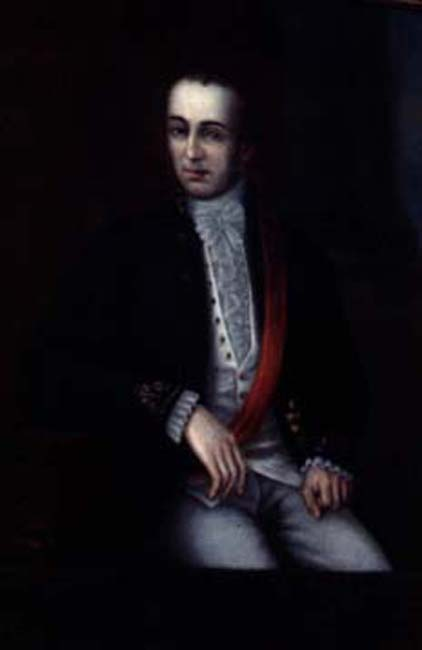

|
Founding Fathers
|
|  |
| Virginia Bourgeois, Retrato de Don Francisco Casimiro Marcó del Pont |
Vicuña Mackenna had already encouraged the use of painting as a way of producing historical memory, when he commissioned teachers and students at the local Academia de Pintura with a series of portraits of colonial governors for Santiago's Colonial Exhibition of 1873. Vicuña Mackenna himself wrote the captions which informed visitors of the character and deeds of the person portrayed. His verdicts were not always generous – on the last Spanish governor, Marcó del Pont (whose portrait by Virginia Bourgeois, a student, received an honourable mention in the 'Concurso de Retratos de Gobernadores' the following year), he had this to say:
'Un esbirro afeminado que habia estado en el sitio de Zaragoza pero debió su baston jeneral de Chile al influjo de su hermano don Juan José Marcó uno de los jefes del partido absolutista en España. Fue cobarte cruel i no supo sobrellevar sus desgracias, por consejos de un fraile mandó construir esta fortaleza, en la cual figura su retrato como último de los gobernadores de España en 1810'